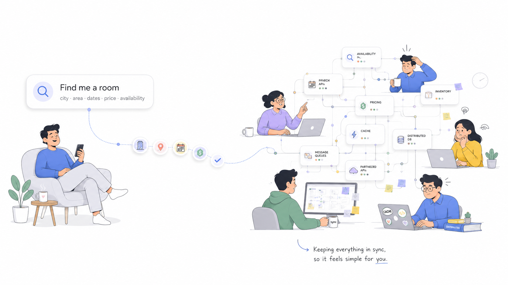
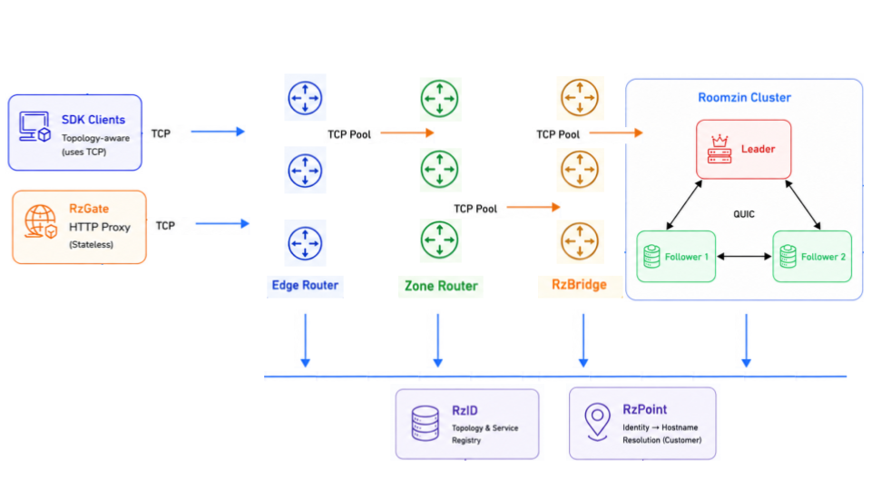

Purpose-built inventory with global routing for booking platforms
Deterministic latency. No sync drama. No deploy drama. Lower operating cost
Deterministic latency. No sync drama. No deploy drama. Lower operating cost

"Find me a room · city · area · dates · price · availability"
Fan-out kills latency
Cache & DB never sync
Complexity compounds
Complexity isn't a requirement — it's a choice.
Keep your reservation system. Make the inventory underneath it dramatically faster and simpler.
Instant updates, no index/cache layers
High availability, no external dependencies
No external tools required
Spike-proof performance
One engine · One architecture · Global scale
The application sees one endpoint. Routing, sharding, and failover are completely transparent.

Request Flow
SDK/RzProxy → Edge Router · Zone Router · RzBridge · Roomzin
Application never knows which zone, shard, or node handled the request
Segment-based zone + shard routing
Routers know zones, bridges know shards
No ZooKeeper, etcd, or Consul needed
Works with VMs, K8s, or cloud
Decoupled layers — storage, routing, and discovery scale independently
No painful migration. Just two CSV files per shard.
Dump your data per shard
Run the CLI tool
Nodes register themselves — platform is live
records converted per second
full snapshot load time
Nodes elect leader & auto-register in RzID — zero manual configuration
Roomzin stores only what users actually search for — the next days to months of live inventory.
Example: Medium Shard
Segments are the unit of geographic isolation — a city, a region, or part of a busy city like New York
Your database remains the source of truth for cold traffic and far-future searches
Native SDKs or HTTP/JSON proxy — you choose.
Binary protocol · Maximum performance
REST API · No SDK required
RzProxy scales horizontally · Prometheus metrics included
Search latency
millions of records
Bulk import
from CSV
Memory footprint
of normalized data size
Snapshot load
60M records · consumer laptop
 Built in Rust
Built in Rust
One engine. Zero compromises.
<1ms search · spike-proof · no surprises
No search indexes · no cache layers · no sync drama
Fewer services · less infrastructure · less maintenance
Auto-discovery · self-registering · built-in HA
One engine replaces search indexes, caches, and routing layers. Your team focuses on features, not infrastructure
Get started with Roomzin today — download, test, and see the difference.